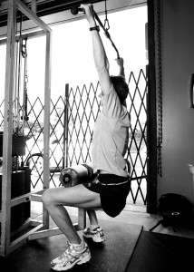1) Lateral Pull-downs
Grasp bar with arms straight and slightly wider than shoulder width apart. Push chest forward, arch lower back. Pull bar down in front of head to shoulder level.
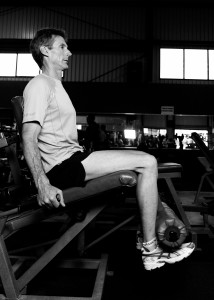2) Leg Extensions
Sit on machine. Rest shin pads just above ankles. Line knee with pivot point of machine. Extend both legs fully to make a straight line.
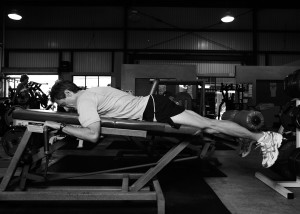3) Leg Curls
Lie face-down on machine bench. Place leg pad just above ankles. Keep legs slightly bent. Contract fully. Keep hips on pad at all times.
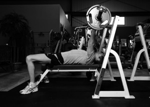4) Bench Press
Lie face-up on bench, hands slightly wider than shoulder width apart, with the bar above mid-chest. Lower bar to one inch above mid chest. Keep lower back on bench at all times.
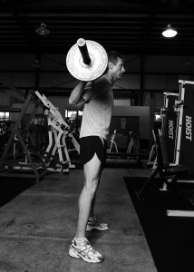5) Squats
Stand with legs wider than shoulders. Arch lower back. Keep weight over heels at all times. Push glutes back. Bend knees until upper leg is parallel to floor. Knees should
never extend in front of the toes.
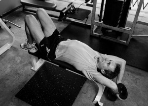6) Dumbbell Pullover—Laying face up on a bench hold dumbbell with both hands directly above chest. Lower the weight to just past horizontal. In this exercise the breathing is opposite of all other lifts.
NOTE: On this you breathe out when you lower the weight, then breathe in when you lift it. All other exercises you breathe out when you lift the weight and breathe in when you lower it.
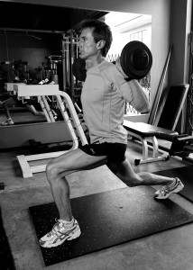7) Reverse Lunges
Stand with legs together. Rest bar comfortably on upper back. Step back, extending leg out behind. Return to standing position, dragging the toes of the extended foot on the floor on the way back up.
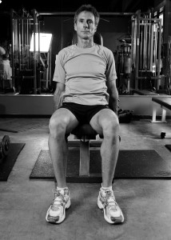8) Side Lateral Raise
Hold a weight in each hand with weight facing your body. Extend arms out and up sideways to just below horizontal. At that point turn palms upward, then continue the lift touching the weights together above your head. When lowering keep palms turned upward until just above horizontal. At that point turn palms downward and continue the lower of the weight.
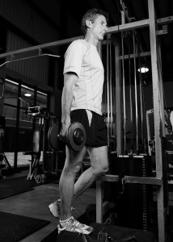9) Calf Raises
Place one foot on a step and the other raised just slightly off the step. Hold the weight in the arm on the same side as the calf you are working. Raise heel. When lowering back down, only go until you feel a moderate stretch in the calf.
DO NOT OVERSTRETCH THE CALF ON THE LOWERING.
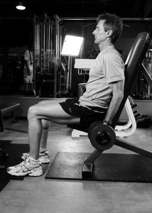10) Bicep Curls
Start with weight lowered, elbows tight against the side of your body and arms slightly bent. Contract arms up, still supporting your weight with your biceps. Keep elbows locked tight against your side.
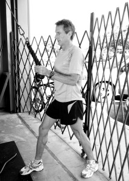11) Tricep Extension
Grasp ropes with both hands keeping elbows next to body and not extended back. Press down and out with both hands continuing to keep elbows in close and parallel to the line of the body.
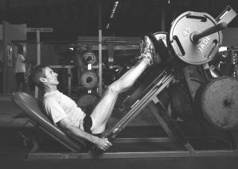12) Leg Press
Sit on the sled with your knees bent and feet roughly shoulder width apart. Extend legs fully.
Then finish with:
- Back Raises: Lay on your stomach. Raise one leg and the opposite arm and hold for 15–30 seconds. Then switch and raise the other leg and opposing arm. Repeat each group twice, rest 10 seconds, then lift both arms and legs at the same time, again holding them off the ground for 15–30 seconds. This will develop the lower back muscles.
- Sit-ups: Sit-ups should work all four areas of the abdominal region, which are the lower, middle, and upper abs as well as the sides, or obliques, of the abdominal muscles. Life Strength sit-ups should not exceed more than 15 repetitions in any of the regions. Doing hundreds of sit-ups can give you abs of steel, but it can also cause a build up of lactic acid, which will turn off your fat burning system and overdevelop the muscles around your diaphragm, which will cause your breathing to be shallow and restricted.
- Modified push-ups: Flip back over onto your stomach and do eight push-up raises. This is a regular push-up motion except that you keep your hips on the ground. This lengthens the muscles that attach to the lower back, which can get shortened by sitting for long periods of time and can cause lower back pain. Do three push-ups looking straight up, two looking left, two looking right, and then one more looking straight up again.
At-Home Program
If you are unable to get to a gym to do the strength exercises there are ways you can mimic many of the lifts in the gym program at home with a minimum of equipment. Here is what you will need:
- Rubber stretch cords (also called resistance bands) with a door attachment
- Hand-held weights (choose various sizes, from three-pounders to roughly twenty pounds)
- Ankle weights
- A sturdy chair
- A flat thin bench (optional)
Each of these tools can help you simulate strength exercises from the gym. You can do these exercises exclusively with resistance bands or with a combination of bands and hand weights. Again, if you use weights, I recommend getting an assortment of sizes, from three pounds up.
Here is a description of how to do each exercise at home:
1)
Lateral Pull-Down: with the stretch cords or bands attached to the top of a doorway you can simulate the lat pull-downs.
2)
Leg Extensions: to do the leg extensions while sitting, attach ankle weights to do the lift. If using bands or cords, secure one end to the base of a chair and the other end to your ankles. While sitting, extend leg up. Do one leg at a time.
3)
Leg Curls: same as leg extensions, but stand facing the chair for stability when you perform the lift.
4)
Bench Press: use hand weights or put bands around your back. Lie flat on a bench and raise arms up straight.
5)
Squats: holding weights in your hands, go through the squat move as described in #5 above. With bands or cords, stand on them and put bands over your shoulders to create resistance during the lift.
6)
Dumbbell Pullover—Lying face up on a bench or edge of a bed hold dumbbell with both hands directly above chest. Lower the weight to just past horizontal. In this exercise the breathing is opposite of all other lifts.
NOTE: On this you breathe out when you lower the weight, then breathe in when you lift it. All other exercises you breathe out when you lift the weight and breathe in when you lower it.
7)
Reverse Lunges—Stand with legs together. Rest bar comfortably on upper back, or without a bar hold weights in both hands. Step back, extending leg out behind. Return to standing position, dragging the toes of the extended foot on the floor on the way back up.
8)
Side Lateral Raise: raise weights as in #8 above. If you use bands or cords, step on them and raise arms out to the side only going to horizontal.
9)
Calf Raises: use a step in your house as support for your foot to lower from.
10)
Bicep Curls: same as #10 above, sitting in a chair or using a home bench. If using bands or cords, stand on one end of them, then lift one arm at a time.
11)
Tricep Extension—Attach stretch cords out in front of you. Bend over and start with both hands just about mid-chest keeping elbows next to body and not extended back. Press back with both hands continuing to keep elbows in close and parallel to the line of the body. If you are using a weight, start on the ground on your knees with upper body supported by one hand on the ground. Have weight in other hand hanging directly down, then press back to full extension.
12)
Leg Press: Using stretch cords, lie on back with cords around lower back and feet in loops. Push up with legs until fully extended.
{kind=link}
{kind=link}
{kind=link}
{kind=link}
{kind=link}
{kind=link}
{kind=link}
{kind=link}
{kind=link}
{kind=link}
{kind=link}
{kind=link}